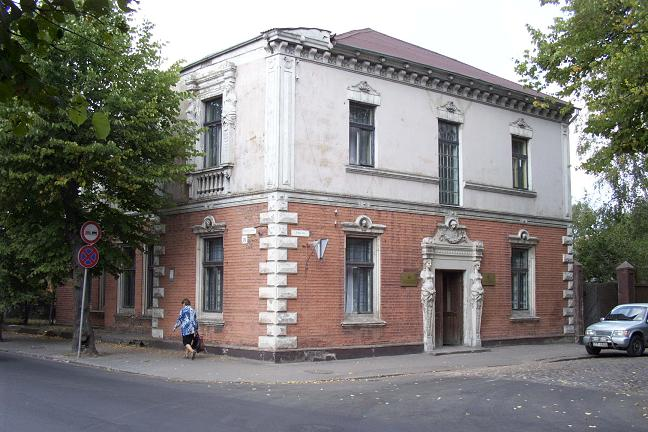
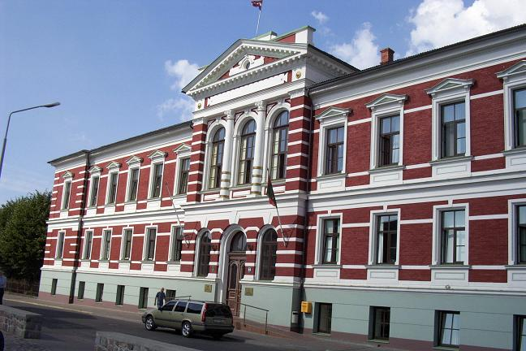
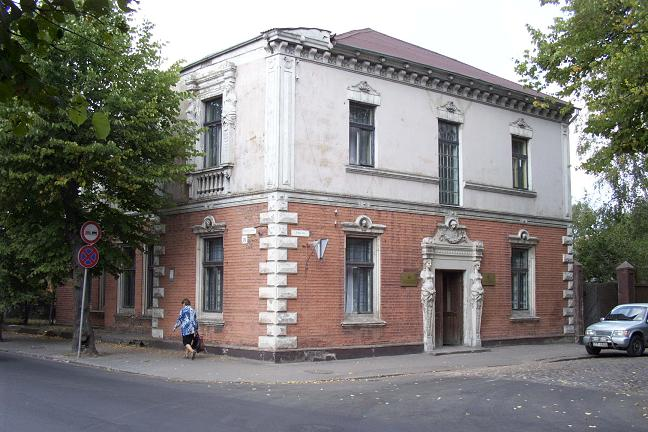
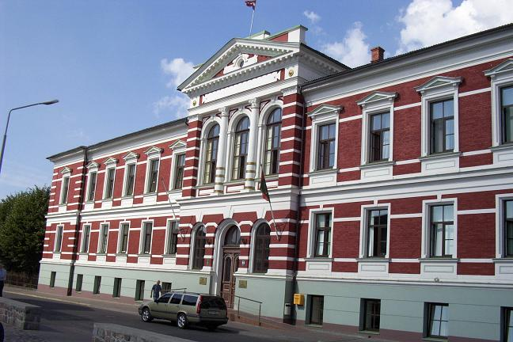

Liepaja, Part 2
The wealthy citizens of Liepaja, many of whom were of German descent, built their villas on Kurmajas Prospekts. Shown here are a 1902 brick house for the merchant A. Weissbrehm and two grand but wooden houses.


Next is the main market building at Kursu iela (center-back of the first picture), dating back to 1910, where meat and fish sellers operate indoors while fruit and vegetable stands are on a plaza outside. This is followed by a picture of the City Council building, originally a 19th century courthouse, and finally by a view of St. Joseph’s Roman Catholic Cathedral, built in the 1890s.

Back to the Liepaja Section Back to the Homepage

Next is the main market building at Kursu iela (center-back of the first picture), dating back to 1910, where meat and fish sellers operate indoors while fruit and vegetable stands are on a plaza outside. This is followed by a picture of the City Council building, originally a 19th century courthouse, and finally by a view of St. Joseph’s Roman Catholic Cathedral, built in the 1890s.

Back to the Liepaja Section Back to the Homepage